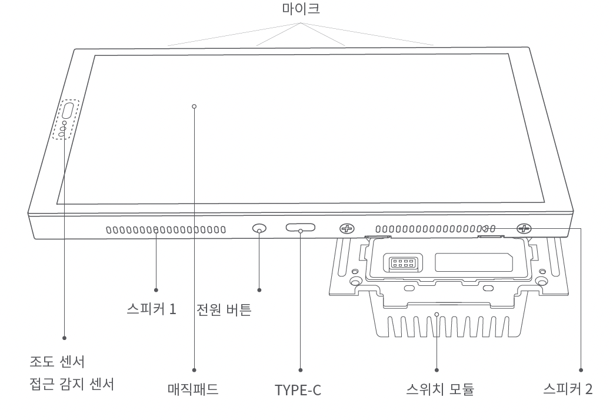
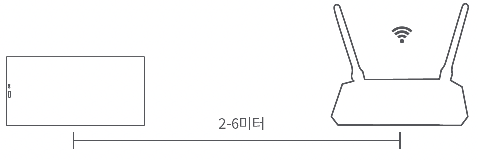
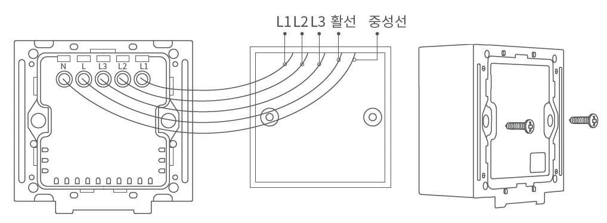
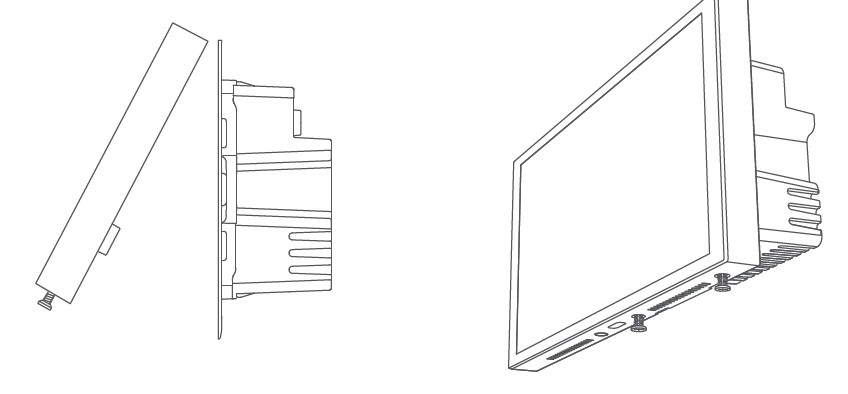
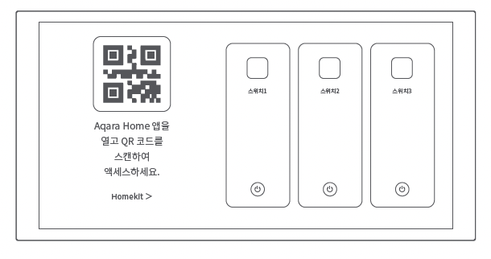

36 매직패드 S1 Plus
36.1 제품 소개
아카라 매직패드 S1 Plus는 3구 스위치 모듈이 결합된 디스플레이 패널입니다. 표준 86형 박스를 기준으로 쉽고 빠른 설치가 가능하도록 설계되었습니다. 최신 QIAO UI가 내장되어 있으며, 터치 스크린을 통해 모든 스마트 홈 장치와 자동실행/동시실행을 제어 할 수 있습니다.

36.2 경고
본 제품은 전기 관련 전문 기술이 필요하므로, 전기기사 또는 기능사 자격증을 소지한 사람이 설치하여야 합니다. 안전을 위해서, 설치하기 전에 반드시 사용 설명서를 읽고 설치하여 주시기 바랍니다.
습기에 주의하시고, 본 제품에 물이나 액체를 흘리지 마세요.
본 제품은 유선 전원 연결 장치입니다. 스위치 모듈에 패널이 추가 결합되며, 스위치 모듈과 패널은 모두 전문가가 설치해야 합니다.
승인되지 않은 타사 소프트웨어로 장치의 펌웨어 및 시스템을 업데이트하면 장치를 사용할 수 없게 되거나 개인정보가 유출되는 등의 보안 위험이 발생할 수 있습니다. 반드시 아카라 공식 앱 안내를 따라 업데이트를 진행하세요.
화면 상단의 마이크 홀(구멍)이 막히면 오디오 품질이 저하됩니다. 마이크 홀을 막지 않도록 주의해 주세요.
본 제품을 직접 수리하려고 시도하지 마십시오. 모든 수리는 공인된 전문가가 수행해야 합니다.
본 제품은 실내 사용 용도로 설계되었습니다. 외부 환경 또는 비정상적인 온습도 상황에서 사용하지 마세요,
본 제품을 열원 근처에 두지 마세요,
날카로운 물체로 터치스크린을 긁지 마세요.
36.3 안내 사항
Aqara 매직패드 S1 Plus와 iPhone, iPad, Apple Watch, HomePod, HomePod mini 또는 Mac등의 Apple 기기와의 통신에는 HomeKit 기술이 적용됩니다. Works with Apple로고의 사용은 이 제품이 로고에 표시된 기술과 연동하여 사용할 수 있도록 디장인 되었다는 것을 의미하며, Apple의 성능 기준이 부합함을 인정 받았다는 것을 의미합니다. Apple은 해당 제품에 대한 사용이나 이에 적합한 안전 기준에 책임을 지지 않습니다.
Apple, Apple Watch, HomeKit, HomePod, HomePod mini, Siri, iPad, iPad Air 및 iPhone은 미국 및 기타 국가에 등록된 Apple Inc.의 상표입니다.
36.4 장치 바인딩 및 초기화
36.4.1 Aqara Home 앱 다운로드
앱 스토어에서 “Aqara Home”을 검색하거나 아래 로고를 클릭해 주세요.


36.4.2 설치
설치하기 전에 주 전원 스위치가 꺼져 있는지 확인하세요.
(1) 설치 위치 선택: 제품이 Wi-Fi연결이 가능한 범위 내에 있는지 확인해 주세요. 장치와 라우터 간 권장 설치범위는 2~6미터 이내입니다. 제품 근처에 장애물이나 전자파장애를 일으킬 수 있는 금속 장애물이 없는지 확인해 주세요.

(2) 포장 상자에서 제품 및 관련 부속품을 꺼냅니다.
(3) 매직패드 하단의 나사가 풀려있는지 확인하세요, 스위치 모듈을 매직패드와 분리한 후 스위치 베이스를 설치합니다. 드라이버를 이용해 뒷면의 나사를 풀어준 뒤, 활선과 중성선을 각각 장치의 구멍 L과 N에 연결합니다. 로드 와이어(조명)를 해당 구명 L1,L2, L3에 연결하세요. 배선이 올바른지 확인한 후 단자 나사를 조이세요. 3개 채널의 부하가 정격 전력을 초과하지 않도록 주의하세요.
참고용: 활선은 일반적으로 빨간색이고 중성선은 일반적으로 하얀색 또는 검정색입니다.
나사 토그는 0.7 Nm를 초고하지 않아야 합니다.
(4) 제공된 나사를 사용하여 스위치 베이스를 벽면 정면 박스에 고정합니다.

(5) 매직패드 하단의 나사가 느슨해 졌는지 확인하세요. 그런 다음 매직패드 상단을 스위치 모듈에 걸어 놓습니다. 장치 하단부를 아래로 누르고 나사를 조이세요.
- 브라켓 하단의 나사를 풀 때 나사가 빠지는 것을 방지하기 위해 무리한 힘을 가하지 않도록 주의하세요.

(6) 하단 나사를 고정한 후 장치의 전언을 켜세요. 시작이 완료될 때까지 기다린 다음 언어를 선택하고 바인딩 페이지로 들어갑니다.

(7) 연결을 위해 휴대폰을 장치에 최대한 가까이 가져 가세요. 또한 휴대폰과 장치가 모두 동일한 Wi-Fi 네트워크(2.4GHz 또는 5GHz)에 있는지 확인하세요.
(8) Aqara홈 앱을 열고 “홈”을 탭한 다음 오른쪽 상단에 “+” 탭하여 “장치 추가” 페이지로 들어갑니다. “MagicPad S1 Plus”를 선택하거나 MagicPad에 있는 QR 코드를 스캔한 후 앱 안내에 따라 장치 추가를 완료하세요.
(9) 추가에 실패할 경우 앱에서 다시 시도해 보세요. 그래도 실패할 경우 www.aqaralife.kr를 방문하여 도움을 받으세요.
장치 추가에 실패하는 경우 아래의 사항을 확인해 주세요.
Wi-Fi이름 또는 암호에는 @,#,%,-와 같은 특수 문자를 지원하지 않습니다. 일반 문자로 변경한 후 다시 시도해 주세요.
본 장치는 현재 WPA/WPA2 기업 수중 Wi-Fi 네트워크를 지원하지 않습니다.
라우터에 와이파이 무단 사용 방지 기능이 켜져 있다면 이를 끄고 시도하세요.
라우터가 AP 격리를 활성화했는지 확인하여 휴대폰이 LAN에서 장치를 검색할 수 없도록 합니다.
브리지 네트워킹은 권장하지 않습니다.
HomeKit 연결에 실패하는 경우 아래의 사항을 확인해 주세요.
액세서리 추가 실패 시 반복적인 실패로 인한 캐시 문제로 오류가 발생 할 수 있습니다. iOS 장비를 재부팅한 후 초기화하여 다시 시도하세요.
액세서리가 이미 추가 되었다는 메시지가 나오는 경우 iOS 장비를 재부팅하고 초기화한 후, HomeKit 설치 코드를 수동으로 입력해 다시 추가해 주세요.
액세서리 찾기 실패시 장비를 초기화하고약 3분 후에 HomeKit 설치 코드를 수동으로 입력하여 다시 추가해 주세요.
36.4.3 네트워크 재설정
매직패드를 성공적으로 추가한 후, [설정]으로 이동하여 [Aqara ID] -> [로그아웃]을 선택하세요. 지침에 따라 장치를 네트워크에 다시 연결하세요.
36.4.4 공장 초기화
매직패드를 성공적으로 추가한 후 [설정]으로 이동하여 [고급 설정] -> [공장 초기화]를 선택하세요. 화면의 지식에 따라 장치를 공장 설정으로 복원하고 모든 데이터를 삭제 하세요.
36.4.5 장치 재시작
패널을 성공적으로 추가한 후 시스템 설정 페이지로 이동하여 [고급 설정] -> [다시 시작]을 선택하세요. 화면의 지시에 따라 장치를 다시 시작하세요.
위 페이지의 제품 이미지와 디스플레이는 참고용입니다. 실제 제품(외형,색상, 크기 등)과 화면 표시 내용(배경,UI,그래픽 등)은 다소 다를 수 있습니다.
위 내용은 필요에 따라 별도의 통지 없이 변경 또는 조정 될 수 있습니다.